Introdução à unidade
Nesta unidade, são abordados os conceitos de fração, números mistos, frações equivalentes, comparações entre números fracionários, operações com números fracionários e porcentagem.
As frações sempre representaram um grande desafio aos alunos, mesmo nos anos finais do Ensino Fundamental. De acordo com Walle (2009, p. 322), algumas ideias são importantes no desenvolvimento dos conceitos de frações, são elas:
1. As partes fracionárias são partilhas iguais (repartir) ou porções de tamanhos iguais de um todo ou unidade. Uma unidade pode ser um objeto ou uma coleção de coisas. Mais abstratamente, a unidade é contada como 1. Na reta numérica, a distância de 0 até 1 é a unidade.
2. As partes fracionárias têm nomes especiais que dizem quantas partes daquele tamanho são necessárias para compor o todo. Por exemplo, terços demandam três partes para formar um todo.
3. Quanto mais partes fracionárias forem usadas para formar um todo, menores elas serão. Por exemplo, oitavos são menores que quintos.
4. O denominador de uma fração indica por qual número o todo foi dividido a fim de produzir o tipo de parte sob consideração. Assim, o denominador é um divisor. Em termos práticos, o denominador nomeia o tipo de parte fracionária considerada. O numerador de uma fração diz quantas partes fracionárias (do tipo indicado pelo denominador) são consideradas. Então, o numerador é um multiplicador - indica um múltiplo da parte fracionária dada.
5. Duas frações equivalentes são dois modos de descrever a mesma quantidade usando partes fracionárias de tamanhos diferentes. Por exemplo, na fração, se os oitavos forem tomados dois a dois, então cada par de oitavos é um quarto. Os seis oitavos então podem ser vistos como três quartos.
UNIDADE 5 - Frações e porcentagem
Cubo D´Água em Pequim, China, 2019.
A China é uma nação da Ásia Oriental com pradarias, desertos, monta-nhas, lagos, rios e praias. A capital Pequim combina a arquitetura moderna com locais históricos. Construções como o Cubo D´Água e o estádio Nacional de Pequim, também conhecido como Ninho de Pássaro, impressionam os visitantes.
A China é o país mais populoso do mundo e uma das nações que mais cresce. Veja a seguir algumas curiosidades desse país que é referência mundial nos esportes.
► Na China há um controle de natalidade imposto pelo governo, no qual cada casal pode ter somente um filho. Isso resultou numa geração com aproximadamente 90 milhões de chineses sem irmãos.
► Quanto ao sexo, nascem 119 meninos para 100 meninas.
► Estimativas revelam que no ano de 2020 pelo menos 30 milhões de homens ficaram solteiros.
► Cerca de 45% das chinesas afirmam que valorizam a carreira profissional e não trocam por um casamento.
► Cerca de 3/10. das famílias chinesas possui um dos avós vivendo junto.
Essas são ideias que devem ser observadas no desenvolvimento da unidade.
A seguir, relacionamos os objetivos que se pretende atingir ao estudar os con- ceitos desta unidade.
Capítulo 1 – Números fracionários
Objetivos:
► Perceber o uso de números fracionários em situações do cotidiano.
► Reconhecer os elementos de uma fração.
► Ler e escrever, por extenso, frações de acordo com seus denominadores.
► Identificar e representar uma quantidade fracionária por meio de desenhos.
► Transformar um número misto em fração e vice-versa.
156
► Reconhecer uma fração como equivalente a outra quando representarem a mesma parte do inteiro.
► Simplificar frações utilizando o processo de equivalência.
► Comparar duas ou mais frações com denominadores iguais e denominadores diferentes.
► Resolver situações-problema envolvendo números fracionários.
Capítulo 2 – Operações com frações
► Resolver situações-problema que envolvam operações com números fracionários.
► Adicionar, subtrair, multiplicar e dividir números fracionários.
► Reconhecer e obter números inversos.
► Resolver potências de números fracionários, sendo o expoente um número natural.
► Resolver raiz quadrada de números fracionários.
► Resolver expressões numéricas que envolvam todas as operações com números fracionários.
Capítulo 3 – Porcentagem
► Interpretar o significado do símbolo %.
► Perceber a porcentagem como um número fracionário de denominador centesimal.
► Transformar uma porcentagem em uma fração centesimal e vice-versa.
► Resolver situações-problema que envolvam porcentagem.
Probabilidade e estatística – Interpretação de gráficos de setores
Objetivos:
► Reconhecer e interpretar um gráfico de setores.
SecretName101/wikimedia.commons

Estádio Nacional de Pequim, China, 2017.
CONVERSE
1. Em sua opinião, por que a China é uma referência nos esportes? Resposta pessoal.
2. Ao apresentar as curiosidades sobre a China, temos no texto alguns números que não são naturais. Que números são esses? 45% e 3/10
3. O que significa dizer “Cerca de 3/10 das famílias chinesas possui um dos avós vivendo junto”? Significa que em cada 10 famílias, em pelos menos 3 um dos avós vive junto.
4. O que significa dizer “Cerca de 45% das chinesas afirmam que valorizam a carreira profissional e não trocam por um casamento”? Significa que em cada 100 chinesas, 45 valorizam a carreira profissional e não trocam por um casamento.
Orientações específicas
Na abertura da unidade, apresentamos algumas curiosidades sobre a China envolvendo novos números. Os números fracionários já foram estudados anteriormente, porém a representação na forma de porcentagem pode ser uma novidade para os alunos. Caso eles ainda não consigam responder às questões propostas, não há problema. Elas podem ser retomadas após o estudo dos conceitos necessários para respondê-las.
No 6.º ano, apresentamos aos alunos os números fracionários e os números decimais sem nos referirmos ao conjunto dos números racionais. A definição e a nomenclatura Conjunto dos Números Racionais será utilizada a partir do 7.º ano, após o estudo do Conjunto dos Números Inteiros.
157
O objetivo do uso do Tangram é trabalhar o conceito de fração, explorando as relações entre as peças, bem como desenvolver nos alunos a criatividade e a imaginação por meio da criação de figuras, o raciocínio geométrico e a compreensão de fração que cada parte representa em relação ao todo.
Além das figuras sugeridas no livro, estimule os alunos a formar outras figuras com as peças do Tangram.
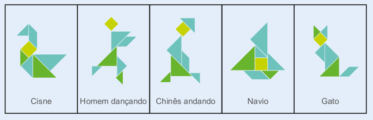Para um aprofundamento sobre a história do Tangram, bem como obter mais informações sobre suas relações com frações, áreas e conhecer outros tipos de Tangram, sugere-se a leitura da seguinte obra:
► SOUZA, E. R. de. et al. A Matemática das sete peças do Tangram. São Paulo: Centro de Aperfeiçoamento do Ensino de Matemática do Instituto de Matemática e Estatística da USP, 1997, v. 7.
Como atividade complementar, caso seja possível, peça aos alunos que pesquisem em jornais e revistas situações do cotidiano em que haja o emprego de números fracionários. Promova uma discussão com a turma sobre o significado dos números encontrados nos respectivos contextos. Para finalizar, peça-lhes que colem no caderno as informações obtidas e que anotem as conclusões a que chegaram.
Uma atividade interessante é construir com os alunos círculos coloridos para serem utilizados durante o estudo sobre números fracionários. Essa sugestão de atividade é possível encontrar no seguinte livro, que traz outros exemplos de atividades e jogos:
► GIMENEZ, Joaquim; BAIRRAL, Marcelo. Frações no currículo do Ensino Fundamental: conceituações, jogos e atividades lúdicas. Rio de Janeiro: Grupo de Estudos e Pesquisas em Educação Matemática (Gepem), Universidade Federal Rural do Rio de Janeiro, 2005.
CAPÍTULO 1 - Conceito de frações
Números fracionários
Para melhor entender o conceito de fração, usaremos um quebra-cabeça milenar chamado Tangram.
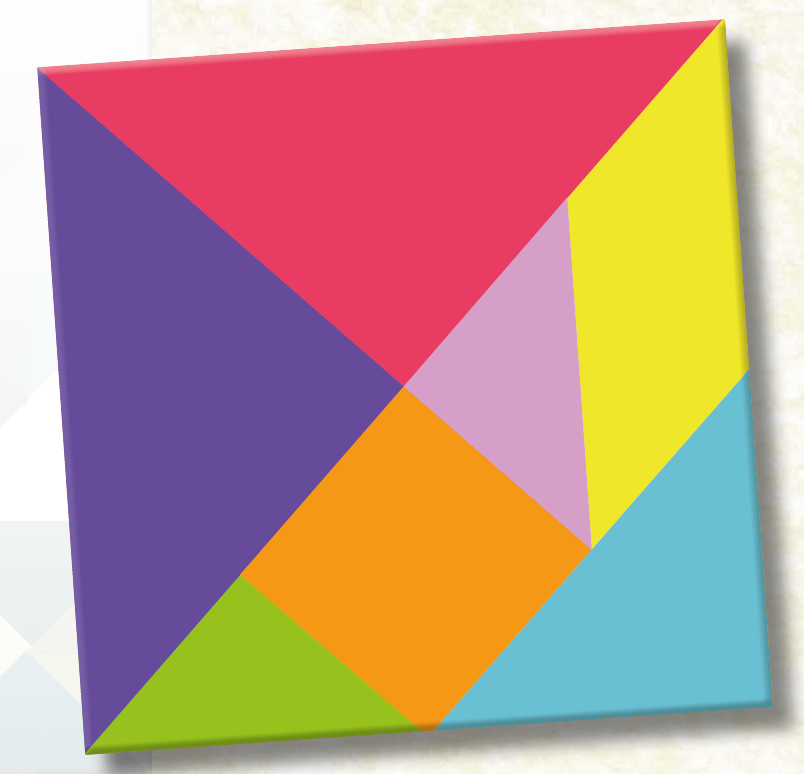A origem e o significado da palavra Tangram possuem muitas versões. Uma delas é a seguinte: gram significa algo desenhado ou escrito como um diagrama. Já a origem da primeira parte: tam é muito duvidosa e especulativa, existindo várias tentativas de explicação. A mais aceita está relacionada à dinastia T’ang (618-906), que foi uma das mais poderosas e longas dinastias da história chinesa, a tal ponto que em certos dialetos do sul da China a palavra T’ang é sinônimo de “chinês”.
Outra versão está ligada à palavra chinesa Tchi Tchiao Pan, cuja tradução seria “Sete peças da sabedoria”, o que nos faz crer que o seu criador tivesse o propósito religioso ou místico ao empregar as sete peças para descrever o mundo. Porém, não existem registros históricos que comprovem estas relações.
[...]
MENEZES, Josinalva Estácio (org.). Conhecimento, interdisciplinaridade e atividades de ensino com jogos matemáticos: uma proposta metodológica.
Recife: UFRPE, 2008. 5 v. p. 115.
158
Atividade 1
Para que os alunos possam construir o Tangram e o quadrado, oriente-os nas divisões a serem realizadas. Em cada etapa, direcione-os quanto à ideia de fração. Faça-os colocar as peças sobre o outro quadrado e contar quantas vezes a peça cabe nele, para que possam verificar quanto cada peça representa do quadrado maior.
1. Vamos construir um Tangram e um quadrado para entender melhor as relações que existem entre as sete peças? Para isso, siga as orientações abaixo.

1º passo: utilizando duas folhas de papel, construa dois quadrados do mesmo tamanho.
![Sequência de 6 figuras, três em cima e três embaixo. Da esquerda para a direita: Figura 1: mãos lado a lado de uma folha de papel em branco na vertical. Figura 2: mãos dobram a folha na diagonal, da esquerda para a direita, formando um triângulo. Figura 3: A folha é desdobrada. A região dobrada está tracejada. Figura 4: Na base da folha, um retângulo na vertical é dobrado. Figura 5: A folha é novamente desdobrada. A região dobrada está tracejada. Uma tesoura corta o retângulo da vertical, na parte debaixo da folha. Figura 6: Duas partes da folha. Uma é a folha de papel recortada. A outra é o que restou da folha: a parte de cima no formato de um quadrado com tracejado na diagonal](../../resources/images/pg159-p1-im1.png)
![Sequência de 6 figuras, três em cima e três embaixo. Da esquerda para a direita: Figura 1: mãos lado a lado de uma folha de papel em branco na vertical. Figura 2: mãos dobram a folha na diagonal, da esquerda para a direita, formando um triângulo. Figura 3: A folha é desdobrada. A região dobrada está tracejada. Figura 4: Na base da folha, um retângulo na vertical é dobrado. Figura 5: A folha é novamente desdobrada. A região dobrada está tracejada. Uma tesoura corta o retângulo da vertical, na parte debaixo da folha. Figura 6: Duas partes da folha. Uma é a folha de papel recortada. A outra é o que restou da folha: a parte de cima no formato de um quadrado com tracejado na diagonal](../../resources/images/pg159-p1-im2.png)
2º passo: separe um dos quadrados que você construiu e recorte o outro, trans-formando-o em dois triângulos.
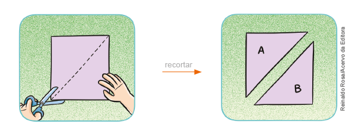3º passo: pegue o triângulo A e divida-o em dois triângulos retângulos e isósceles, que serão as peças 1 e 2. Anote, em cada peça, seu respectivo número.
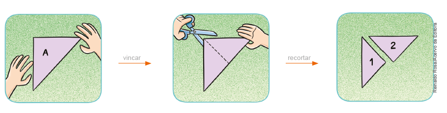159
4º passo: pegue o triângulo B e marque o ponto que indica a metade da medida do lado maior, conforme a ilustração. Dobre a ponta do triângulo que forma o ângulo reto até o ponto encontrado anteriormente. Recorte o triângulo retângulo menor e escreva o número 3 nessa peça. Em seguida, divida o trapézio em dois trapézios menores, decompondo um deles em um quadrado e um triângulo retângulo isósceles. Numere as peças que você encontrou, como mostra a ilustração.
![Sequência de 6 figuras, três em cima e três embaixo. Da esquerda para a direita: Figura 1: mãos lado a lado de uma folha de papel em branco na vertical. Figura 2: mãos dobram a folha na diagonal, da esquerda para a direita, formando um triângulo. Figura 3: A folha é desdobrada. A região dobrada está tracejada. Figura 4: Na base da folha, um retângulo na vertical é dobrado. Figura 5: A folha é novamente desdobrada. A região dobrada está tracejada. Uma tesoura corta o retângulo da vertical, na parte debaixo da folha. Figura 6: Duas partes da folha. Uma é a folha de papel recortada. A outra é o que restou da folha: a parte de cima no formato de um quadrado com tracejado na diagonal](../../resources/images/pg159-p4-im1.png)
![Sequência de 6 figuras, três em cima e três embaixo. Da esquerda para a direita: Figura 1: mãos lado a lado de uma folha de papel em branco na vertical. Figura 2: mãos dobram a folha na diagonal, da esquerda para a direita, formando um triângulo. Figura 3: A folha é desdobrada. A região dobrada está tracejada. Figura 4: Na base da folha, um retângulo na vertical é dobrado. Figura 5: A folha é novamente desdobrada. A região dobrada está tracejada. Uma tesoura corta o retângulo da vertical, na parte debaixo da folha. Figura 6: Duas partes da folha. Uma é a folha de papel recortada. A outra é o que restou da folha: a parte de cima no formato de um quadrado com tracejado na diagonal](../../resources/images/pg159-p4-im2.png)
5º passo: utilizando a outra peça no formato de trapézio, encontre as duas úl-timas peças que compõem o Tangram: um triângulo retângulo isósceles e um paralelogramo, conforme a ilustração. Numere as peças 6 e 7.
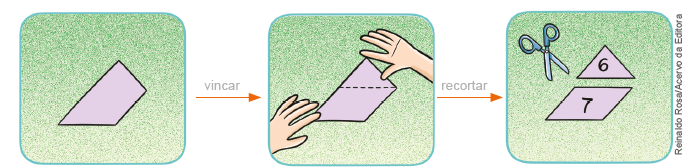6° passo: com as peças que você encontrou, monte o Tangram representado ao lado do quadrado abaixo. Utilizando cores diferentes, você poderá pintar as peças do seu Tangram e o quadrado.
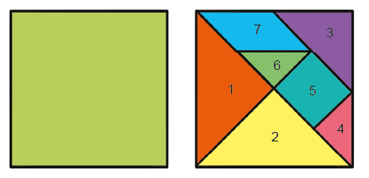160
Atividade 2
Oriente os alunos para que sobreponham as peças ao outro quadrado construído, a fim de verificar quantas vezes cada peça cabe no quadrado maior. Se necessário, explore mais questões que apresentem relações entre as peças. Relações que poderão ser trabalhadas: peça 6 em relação à 7 (peça 6 equivale à metade da 7), peça 4 em relação à 5 (peça 4 equivale à metade da 5), peça 3 em relação à 2 (peça 3 equivale à metade da 2), peça 6 em relação à 1 (peça 6 equivale à quarta parte da peça 1), peça 5 em relação ao quadrado maior (peça 5 equivale à oitava parte do quadrado maior), etc.
2. Agora, utilizando o Tangram, responda com seu colega às questões a seguir. Depois, registrem-nas em seus cadernos.
a) Quantas vezes a peça 1 cabe no outro quadrado que você construiu? 4 vezes.
b) A peça 1 representa qual parte do quadrado maior? A quarta parte.
c) Quantas vezes a peça 3 cabe no outro quadrado que você construiu? 8 vezes.
d) A peça 3 representa qual parte do quadrado maior? A oitava parte.
e) Quantas vezes a peça 4 cabe no outro quadrado que você construiu? 16 vezes.
f) A peça 4 representa qual parte do quadrado maior? A décima sexta parte.
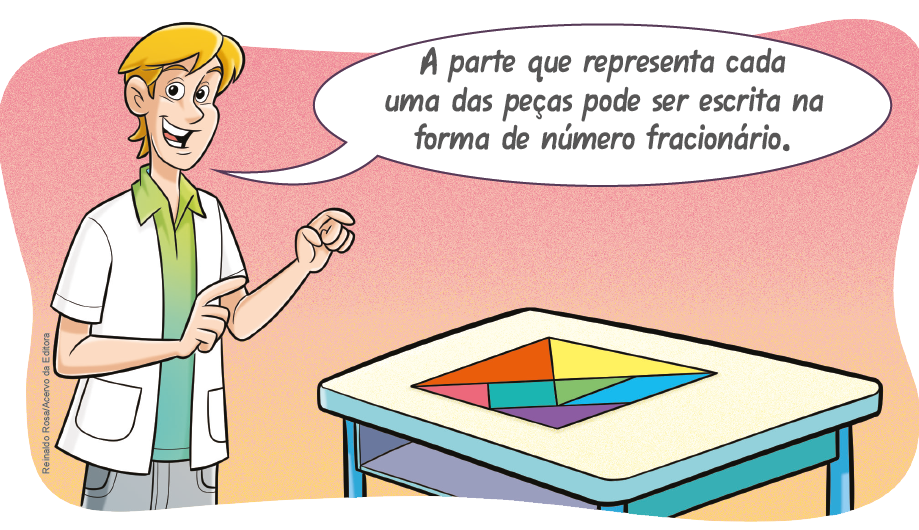
⟶ quantidade de partes consideradas (numerador)
⟶ número de partes iguais em que foi dividida a parte inteira
(denominador)
⟶ quantidade de partes consideradas (numerador)
⟶ número de partes iguais em que foi dividida a parte inteira
(denominador)
⟶ quantidade de partes consideradas (numerador)
⟶ número de partes iguais em que foi dividida a parte inteira
(denominador)
Nesse caso, as frações estão relacionadas à ideia de parte de um inteiro.
161
Atividade 3
Além das figuras apresentadas no livro do aluno, você pode propor outras figuras como desafio para que os alunos, em duplas, montem.
Sugestão de atividade
1. Quais as peças que podem ser combinadas, usando-se todas, para formar as figuras a seguir:
a)
b)
Respostas:
a)
b)
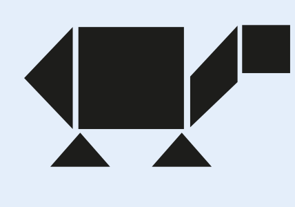
3. O Tangram é um jeito interessante e divertido de entendermos as frações. Com as peças do seu Tangram, monte as figuras a seguir e desenhe-as em seu caderno. Compartilhe o que montou com o seu colega.

Leitura de frações
Observe, no quadro abaixo, como é feita a leitura de algumas frações.
Quando o denominador for maior que 10 e não for uma potência de 10, lemos o numerador e o denominador seguido da palavra: avos.
Vejamos a seguir algumas situações na qual utilizamos as frações.
Leitura de frações
Após apresentar aos alunos a leitura das frações mostradas no quadro, verifique se eles percebem que temos uma leitura para fração cujos denominadores vão de 2 a 9, outra leitura para denominadores cujos números são potências de 10 e para as demais frações nas quais são incluídas a palavra “avos”.
Observe a leitura de frações em que o denominador é uma potência de base 10:
1/10: um décimo;
1/100: um centésimo;
1/1000: um milésimo.
162
Na situação 1, é explorada a ideia da divisão em partes iguais. Possui um total de 48 figurinhas e faz necessário calcular quanto representa a quarta parte deste total.
Para resolver a situação 2, pode-se também considerar o total de figurinhas que corresponde a 48 e subtrair a quarta parte do total, observe:
48 – 12 = 36
Desta forma, é possível saber quanto corresponde 3/4 de 48 que é igual a 36 ou aproveitar o cálculo que já foi realizado anteriormente e realizar a subtração.
Converse com os alunos e questione de que outra forma poderia ser resolvida a situação 2, além da apresentada no livro.
Situação 1
Marcelo e Carlos colecionam figurinhas do Campeonato Brasileiro de Futebol. Marcelo tem 48 figurinhas repetidas e resolveu dar 1/4 delas para Carlos. Quantas figurinhas ele deu para Carlos?
Vamos dividir a quantidade de figurinhas em 4 partes iguais.

Como 48 representa o todo e queremos apenas a quarta parte, temos:
1/4 de 48 é igual a 48 : 4 = 12
Portanto, Marcelo deu 12 figurinhas para Carlos.
Nesse caso, a fração está relacionada à ideia de divisão.
Situação 2
Caso Marcelo resolvesse dar 3/4 das figurinhas, com quantas figurinhas Carlos ficaria?
Precisamos saber quanto representa 3/4 de 48.
4
Como 48 representa o todo e este foi dividido em quatro partes iguais, sendo que três dessas partes correspondem às figurinhas que seriam dadas a Carlos, temos:
3/4 de 48 é igual a 48 : 4 ∙ 3 = 12 ∙ 3 = 36
4
Portanto, Carlos ficaria com 36 figurinhas.
163
A situação 3 pode ser resolvida com o apoio de um desenho, porém, temos a introdução da representação de um número misto que pode ser transformado em uma fração imprópria, ou seja, uma fração em que o denominador é maior que o numerador. Estas transformações serão estudas na página 168.
Aproveite o momento para questionar se os alunos conhecem outra forma de representar as frações apresentadas na situação 3.
Situação 3
Marcelo e Carlos ganharam de sua tia 3 barras de chocolate para que fossem divididas igualmente entre os dois. Qual a fração que representa a quantidade que cada um ganhou de chocolate?
Veja como as barras de chocolate serão divididas entre os dois garotos:
Logo, cada um recebeu 1 barra inteira mais 1/2 de barra, ou ainda, cada um recebeu 3/2 de barras de chocolate.
ENCONTRE SOLUÇÕES
1. Escreva, em seu caderno, como são 3. As figuras abaixo estão divididas em lidas as frações abaixo.
a)4/7 Quatro sétimos.
b)1/8 Um oitavo.
c)1/10 Um décimo.
d)17/9 Dezessete nonos.
e)3/5 Três quintos.
f)12/13 Doze treze avos.
g)43/29 Quarenta e três vinte e nove avos.
h)1/100 Um centésimo.
2. Em seu caderno, represente, por meio de desenhos, as frações a seguir.
a)1/4
b)5/6
c)8/5
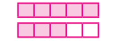d)7/3
3. As figuras abaixo estão divididas em partes iguais. Em seu caderno, escreva a fração correspondente à parte pintada de amarelo em cada uma das figuras.
![Exercício com 6 alternativas de figuras geométricas nas cores verde e amarela e nomeadas de a, b, c, d, e, f. Letra a: um triângulo dividido ao meio. À esquerda na cor amarela e à direita, na cor verde. Letra b: dois hexágonos. O primeiro na cor amarela, está dividido em seis partes, formando seis triângulos. O segundo, também dividido em seis partes. A parte superior dele, é amarela, A parte debaixo, são três triângulos. O da esquerda é verde, o do meio é amarelo e o da direita é verde. Letra c: um cilindro dividido em 3 partes. A de cima é amarela, a do meio verde e a base é amarela. Letra d: Dois retângulos divididos em seis partes, formando seis triângulos. O primeiro é amarelo. O segundo intercala as cores verde e amarela, começando com a cor verde. Letra e: Um paralelogramo dividido em 12 partes, sendo 3 linhas com quatro trapézios em cada linha. Na linha 1, a sequência de cores da esquerda para a direita é: amarela, verde, verde, verde. Na linha 2: verde, amarela, amarela, verde. Linha 3: amarela, verde, verde, amarela. Letra f: figura de um retângulo vazado no meio. Ele é formado por 16 cubos. As cores se intercalam em verde e amarela.](../../resources/images/verdeamar.png)
164
Atividade 6
c) 6/9 do suco são constituídos de água.
d) Se bebermos 2 copos, estaremos bebendo 2/9 de todo o suco.
Atividade 7
Nesta atividade retomamos algumas unidades de medidas que são usuais no nosso cotidiano. Para que os alunos possam escrever as frações que são solicitadas eles irão precisar saber que:
• 1 hora corresponde a 60 minutos;
• 1 semana tem 7 dias;
• 1 ano tem 12 meses;
• 1 ano tem 365 dias;
• 1 semestre tem 6 meses.
Aproveite o momento para questioná-los sobre estas unidades de medidas de tempo.
4. Nas embalagens de gelatina, encontramos informações sobre como prepará-la.
Modo de preparo
- Dissolva o conteúdo dessa embalagem em 250 mL de água fervente.
- Adicione 250 mL de água fria ou gelada e coloque em taças.
- Leve à geladeira até adquirir consistência.
► Considerando que 1 litro corresponde a 1 000 mL, responda:
a) Qual é a fração do litro que corresponde à quantidade de água fervente necessária para o preparo? 250/1000 ou 1/4.
b) Qual é a fração do litro que corresponde à quantidade total de água usada no preparo? 500/1000 ou 1/2.
5. A ilustração a seguir mostra Francisco com seus amigos.
► Observando o número de pessoas na fotografia, qual é a fração que representa a quantidade de:
a) meninas? 3/7
b) meninas que estão de saia? 1/3
c) meninos? 4/7
d) meninos que estão de bermuda? 3/4
e) pessoas com boné? 2/7
6. Para fazer 3 litros de suco de uva, a receita indica que, em uma jarra, devem ser adicionados 3 copos de suco concentrado e 6 copos de água, utilizando-se o mesmo copo.
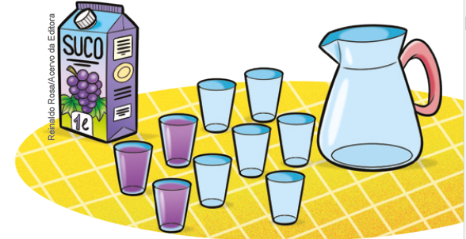a) Quantos copos equivalem a 3 litros de suco? 9 copos.
b) Depois de preparado, qual é a fração que representa a parte do suco concentrado? 3/9 do suco são constituídos de suco concentrado.
c) Qual é a fração que representa a parte da água no suco preparado?
d) Se bebermos 2 copos do suco pronto, estaremos bebendo qual fração de todo o suco preparado?
e) Para preparar 1 litro desse suco, quantos copos de suco concentrado e quantos copos de água devem ser usados? 1 copo de suco concensertrado e 2 de água.
f) Se fosse feito 1 litro desse suco, qual fração representaria a parte do suco concentrado? 1/3
g) Se fossem preparados 2 litros desse suco, qual fração representaria a parte da água utilizada? 4/6 = 2/3
7. Em seu caderno, escreva a fração que representa:
a) 15 minutos de 1 hora 15/60
b) 2 dias de 1 semana 2/7
c) 7 meses de 1 ano 7/12
d) 25 dias de 1 ano 25/365
e) 5 meses de 1 semestre 5/6
165
Atividade 8
também poderão apresentar o resultado final na forma irredutível. Caso eles não utilizem a forma irredutível não há problemas, estudaremos na sequência como realizar essa transformação.
Atividade 12
Se 400 litros correspondem a 2/5 da sua capacidade, então a capacidade total pode ser calculada por:
400 : 2 = 200
200 ∙ 5 = 1 000
A capacidade total da caixa é de 1 000 litros.
Ajude os alunos a observarem que, nesse problema, a quantidade de litros dada refere-se a uma parte do todo e não ao todo, como nos problemas realizados anteriormente.
Aproveite que abordamos, na atividade 11, o tema de poupança para questionar os alunos se eles possuem o hábito de controlar os ganhos e gastos e, se em suas casas há esse habito. Converse com eles sobre atualmente existir planilhas eletrônicas e aplicativos de smartphones que auxiliam nesse controle, alguns conectam diretamente com uma conta bancária e fazem os cálculos automaticamente. Exponha que também é importante estabelecer metas de economia pensando em situações adversas ou para a compra de algo de maior valor. Com esse diálogo, esperamos estimular a utilização de tecnologias digitais de maneira reflexiva para resolver problemas, conforme proposto na Competência geral 5 e 9, a competência específica 5 da Matemática e o tema transversal de educação financeira. Se possível, promova um projeto com os alunos a longo prazo, para pensarem em como fazer economia ou gerar recursos para uma meta.
8. O instrumento utilizado para medir ângulos é o transferidor. Nos desenhos abaixo, identifique a medida de cada ângulo por meio do transferidor. Em seguida, represente a fração que indica essa medida em relação ao ângulo de 360º.
a) 90°; 1/4
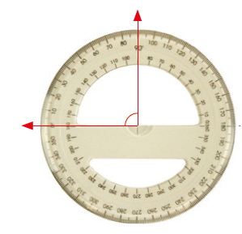b) 225°; 5/8
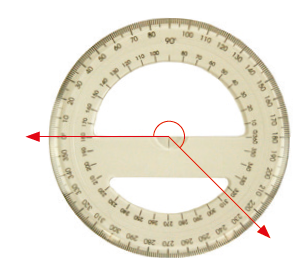c) 120°; 1/3
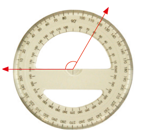d) 270°; 3/4
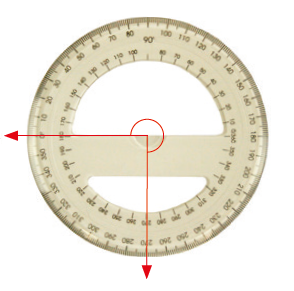9. No último dia de aula, apenas 3/4 dos alunos compareceram às aulas. Sabendo que a turma tem 36 alunos, quantos compareceram? 3/4 de 36 = 36 : 4 ∙ 3 = 9 ∙ 3 = 27. Compareceram às aulas 27 alunos.
10. Em uma eleição para prefeito de uma cidade, o candidato vencedor
obteve 59 dos votos. Votaram, nessa eleição, 4 500 eleitores.
Quantos votos o candidato vencedor obteve?
5/9 e 4 500 = 4 500 : 9 ∙ 5 = 500 ∙ 5 = 2 500
O vencedor
obteve 2 500 votos.
11. Marta está pensando em comprar uma casa. O dinheiro de sua
poupança será usado para dar entrada no imóvel e ela pretende
financiar o restante da dívida. O valor de cada prestação não poderá
ultrapassar
1/4
de seu salário. Sabendo que ela recebe mensalmente 1 280 reais, qual
será o valor máximo de cada prestação?
1/4 de 1 280 = 1 280 : 4 ∙ 1 = 320
O valor máximo de cada prestação poderá ser de 320 reais.
12. A caixa d'água na casa de Vinícius está com 400 litros, que correspondem a 2/5 de sua capacidade. Qual a capacidade total dessa caixa d'água? 1 000 litros.
13. Na imagem a seguir temos um copo medidor indicando alguns produtos como açúcar e farinha, quantidade em gramas, que normalmente são usados para fazer um bolo.
► Em seu caderno, elabore um problema sobre frações utilizando a imagem como referência. Em seguida, troque seu caderno com um colega para que ele resolva o problema elaborado por você. Juntos, verifiquem se os problemas resolvidos estão corretos.
Resposta pessoal. 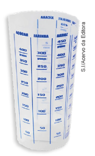166
Atividade 14
O primeiro frasco tem mais que a metade de líquido; o segundo frasco tem a metade do frasco preenchida com líquido; e no terceiro frasco há menos da metade de líquido. A única alternativa que representa essa situação é a alternativa (b).
14. (OBMEP) Três frascos, todos com capacidade igual a 1 litro, contêm quantidades diferentes de um mesmo líquido, conforme ilustração ao lado. Qual das al-ternativas melhor expressa, aproximadamente, o volume de líquido contido nos frascos A, B e C, nesta ordem?

a) 3/7, 4/9, 2/5
b) 2/3, 1/2, 1/4
c) 2/3, 4/6, 2/4
d) 2/3, 4/7, 3/4
e) 3/3, 4/5, 2/3
Sugestão de atividade
1. Júlia e Isabel estudam na mesma sala e vão para a escola a pé, ambas pelo mesmo caminho. A casa de Júlia fica a 600 metros da escola e a de Isabel, a 800 metros desta. Supondo que, neste momento, Júlia já percorreu 2/3 do caminho e Isabel já andou 4/5 dele, quem está mais perto da escola?
2/3 de 600 → 600 : 3 ∙ 2 = 400; 4/5 de 800 = 800 : 5 ∙ 4 = 160 ∙ 4 = 640 Isabel está mais perto da escola.Um livro tem 360 páginas. Adriano já leu 5/12 desse livro. Quantas páginas faltam para ele terminar a leitura?
5/12 de 360 → 360 : 12 ∙ 5 = 30 ∙ 5 = 150 360 - 150 = 210. Faltam 210 páginas para Adriano terminar o livro.167
Neste momento é apresentado como transformar um número misto em uma fração e vice e versa. Observe se os alunos percebem que o número misto indica que na situação apresentada está sendo considerado mais de um inteiro.
Em duplas, proponha que eles escrevam no caderno outra situação-problema que possa ser usado o conceito de número misto e possa ser realizada a transformação deste número em fração.
Números mistos
Renato e Júlio são irmãos e ganharam duas barras de chocolate de uma tia. Veja a parte que eles comeram no dia em que ganharam o chocolate.
Eles comeram, juntos, 1 barra inteira e 11/24 da segunda barra.
Podemos indicar a quantidade que eles comeram por meio da fração 35/24 ou ainda pelo número misto 1(11/24).
35/24 = 1(11/24 )
Às vezes, precisamos transformar um número misto em forma de fração. Veja como podemos transformar, no caso, 35/24 em 1(11/24 ).
Observe nos desenhos a representação da parte que os dois irmãos comeram da barra.
1 barra inteira ou 24/24 da barra
11/24 da barra
Portanto, eles comeram 24/24 mais 11/24 das barras de chocolate, ou seja, 35/24.
Também podemos fazer o caminho inverso, transformar a fração em um número misto. Note que, nesse caso, o numerador é maior que o denominador.
Observe:
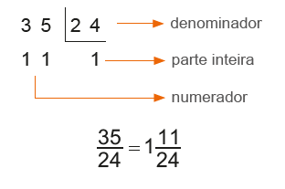Atenção!
► Frações próprias são aquelas cujo numerador é menor do que o denominador. Exemplo: 1/3
► Frações impróprias são aquelas cujo numerador é maior do que o denominador. Exemplo: 9/4
► Frações aparentes são aquelas cujo numerador é um múltiplo do denominador. Exemplo: 8/4
168
Frações equivalentes
A questão apresentada tem por objetivo averiguar se os alunos recorrem a seus conhecimentos matemáticos desenvolvendo o raciocínio lógico, o espírito de investigação e a capacidade de produzir argumentos convincentes, de modo a contemplar a Competência específica de Matemática 2.
1. Em seu caderno, represente por meio de desenhos, as frações abaixo.
a) 6/5
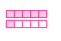b) 3/7
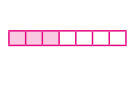c) 8/4
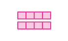d) 2/3
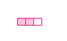2. Em seu caderno, transforme os números mistos a seguir em frações.
a) 4. 1/5 21/5
b) 3. 2/7 23/7
c) 1. 7/10 17/10
d) 5 1/2 11/2
3. Em seu caderno, transforme as frações a seguir em números mistos.
a) 19/5 3. 4/5
b) 22/7 3. 1/7
c) 13/9 1. 4/9
d) 37/8 4. 5/8
4. Luciana comprou 2 caixas com 6 lentes de contato descartáveis cada uma. Nessas condições, represente, por meio de fração, a quantidade de lentes usadas em cada situação.
a) Depois de 2 meses, Luciana usou 4 lentes de uma caixa. 4/6
b) Depois de 5 meses, Luciana já havia usado 1 caixa inteira e mais 2 lentes da outra caixa. 8/6 ou 1. 2/6
Frações equivalentes
Marcela recortou algumas fichas, todas do mesmo tamanho, porém com divisões e cores diferentes. Observe a ilustração ao lado.
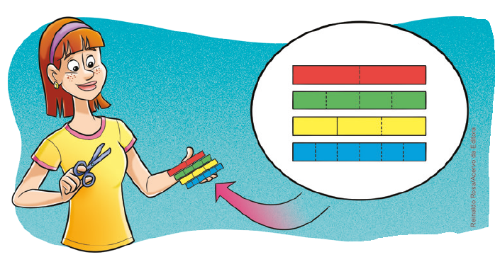1. Agora, para compreender o que são frações equivalentes, troque ideias com um colega, comparem as fichas que Marcela recortou e, em seus cadernos, respondam às questões a seguir.

a) Quantas partes verdes são necessárias para compor uma parte vermelha? 2 partes.
b) Que fração representa cada parte da ficha vermelha? 1/2
c) Que fração representa 2 partes da ficha verde? 2/4
d) Duas partes verdes são equivalentes a uma parte vermelha? Por quê? Sim. Porque representam a mesma parte do inteiro.
169
O conceito de frações equivalentes é bastante usado quando realizamos operações, como adição e subtração de frações quando os denominadores são diferentes. Temos como objetivo levar os alunos a perceberem que um mesmo número pode apresentar infinitas frações equivalentes.
Você pode ampliar a exploração de frações equivalentes solicitando aos alunos que desenhem e recortem tiras coloridas, como as mostradas a seguir. Desta forma, em duplas, os alunos podem escrever no caderno outras frações equivalentes, além das apresentadas no livro.
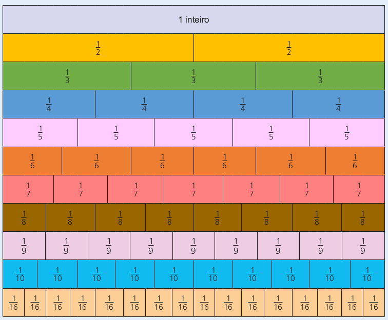Após a exploração de novas frações equivalentes, comente sobre a importância da simplificação de uma fração e como nos cálculos matemáticos sempre buscamos a forma irredutível das frações durante o processo de resolução.
Comente com os alunos que a fração irredutível pode ser encontrada dividindo-se o numerador e o denominador pelo mdc entre eles.
e) Quantas partes azuis são necessárias para compor duas partes amarelas? 4 partes.
f) Que fração representa 2 partes da ficha amarela? 2/3
g) Que fração representa 4 partes da ficha azul? 4/6
h) Quatro partes azuis são equivalentes a duas partes amarelas? Por quê? Sim. Porque representam a mesma parte do inteiro.
Quando duas ou mais frações representam a mesma parte do todo, elas são chamadas de frações equivalentes.
![Desenho de um par de barras horizontais na cor amarela e de tamanho igual. Na primeira barra, ela foi dividida em 3 partes, sendo o primeiro quadrante destacado de amarelo. À direita da barra, a fração 1/3. Na segunda barra, ela foi dividida em seis partes. No desenho estão destacados os dois primeiros quadrantes da barra 2. À direita, a fração 2/6. Mais à direita do par de barras: a expressão 1/3 igual a 2/6. Uma flecha em cima do 1/3 em direção ao 2/6 com a expressão em cima 1 vezes 2. Uma outra flecha abaixo do 1/3 em direção ao 2/6 com a expressão 2 vezes 6.](../../resources/images/barraAm.PNG)
![Desenho de um par de barras horizontais na cor verde e de tamanho igual. Na primeira barra, ela foi dividida em 5 partes, sendo os três primeiros quadrantes destacados de verde. À direita da barra, a fração 3/5. Na segunda barra, ela foi dividida em dez partes. No desenho estão destacados os seis primeiros quadrantes. À direita, a fração 6/10. Mais à direita do par de barras: a expressão 3/5 igual a 6/10. Uma flecha em cima do 3/5 em direção ao 6/10 com a expressão em cima 3 vezes 2. Uma outra flecha abaixo do 3/3 em direção ao 6/10 com a expressão 5 vezes 2.](../../resources/images/barraVe.PNG)
Para obter uma fração equivalente a uma fração dada, multiplicamos o numerador e o denominador por um mesmo número natural, diferente de 0 (zero).
Simplificação de frações
Algumas frações podem ser escritas de maneira mais simples, ou seja, podem ser simplificadas. Nesse caso, podemos encontrar uma fração equivalente, com numerador e denominador menores.
![Dentro de um retângulo laranja, esquema com a expressão 48/36 igual 24/18 igual 12/9 = 4/3. Acima da expressão: uma flecha liga o número 48 ao 24 com a expressão acima: dividido por dois. Outra flecha liga 24 ao 12 com a expressão dividido por dois. Uma outra flecha liga 12 ao 4 com a expressão dividido por 3. Abaixo, o mesmo: uma flecha liga o número 36 ao 18 com a expressão abaixo: dividido por dois. Outra flecha liga 18 ao 9 com a expressão dividido por dois. Uma outra flecha liga 9 ao 3 com a expressão dividido por 3.](../../resources/images/laran.PNG)
Para isso, basta dividirmos, sucessivamente, o numerador e o denominador por um mesmo número natural, diferente de 0 (zero).
Quando não podemos mais simplificar uma fração, dizemos que ela é uma fração irredutível, ou seja, quando o único divisor comum do numerador e do denominador é 1.
170
ENCONTRE SOLUÇÕES
a) 7/12, com denominador igual a 48; 28/48
b) 3/8, com numerador igual a 27; 27/72
c) 13/15, com numerador igual a 52; 52/60
d) 3/5, com denominador igual a 55. 33/55
2. Em seu caderno, continue as sequências abaixo, escrevendo as três próximas frações equivalentes.
a) 1/4, 2/8, 3/12
4/16, 5/20, 6/24b) 8/3, 16/6, 24/9
32/40, 40/15, 48/18c) 5/7, 10/14, 15/21
20/28, 25/35, 30/42d) 13/9, 26/18, 39/27
52/36, 65/45/, 78/543. Dadas as seguintes frações, quais são irredutíveis?
a) 5/9
b) 11/22
c) 7/14
d) 8/3
4. Observe o quadro a seguir.
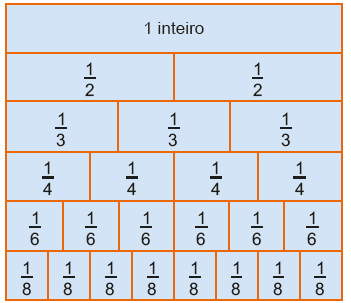► Agora, em seu caderno, escreva uma fração equivalente a:
a) 1/2 2/4 ou 3/6 ou 4/8
b) 2/3 4/6
c) 3/4 6/8
d) 1/3 2/6
5. Nas sequências abaixo, identifique a fração que não é equivalente à fração dada e copie-a no caderno.
a) 2/3 → 4/6, 6/9, 10/12
b) 9/11 → 18/33, 36/44, 45/55
c) 4/7 → 8/14, 12/28, 20/35
d) 6/5 → 12/10, 24/15, 42/35
6. Observe a figura atentamente e, depois, responda às questões.
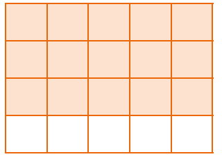a) Que fração representa a parte colorida da figura? 15/20
b) Qual é a forma irredutível dessa fração? 3/4
7. Em seu caderno, simplifique as frações até obter a forma irredutível.
a) 45/36 5/4
b) 196/56 7/2
c) 150/100 3/2
d) 54/108 1/2
e) 28/42 2/3
f) 27/51 9/17
8. Qual a fração irredutível equivalente a 76/114? 2/3
171
As atividades dessa página auxiliam no desenvolvimento da Competência geral 2, pois estimulam os alunos a colocarem em prática o seu pensamento crítico, científico e criativo.
Atividade 11
Para saber a fração que representa a parte sombreada, divide-se o retângulo em triângulos. A região sombreada representa:
16/36 = 4/9
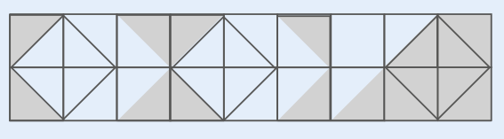Atividade 12
O quadrado está dividido em 16 quadradinhos. A área sombreada é a soma das áreas de 8 triângulos iguais, cada um com área igual a metade da área de um quadradinho. Portanto, a área sombreada é igual à área de 4 quadradinhos, o que corresponde a 4/16 = 1/4 da área do quadrado.
9. Observe o mosaico abaixo e responda às questões.
![Mosaico em perspectiva nas cores cinza e azul. O mosaico pode ser dividido em cinco linhas. Linha 1, na cor cinza, da esquerda para a direita: um triângulo cortado ao meio, sequência de quatro triângulos e mais um triângulo cortado ao meio. Linha 2: na cor azul, sequência de cinco losangos. Linha 3: na cor cinza, um triângulo, sequência de quatro losangos e outro triângulo. Linha 4: na cor azul, sequência de cinco losangos. Linha 5: na cor cinza, um triângulo cortado ao meio, sequência de quatro triângulos e mais um triângulo cortado ao meio.](../../resources/images/chade.PNG)
a) Que fração representa a parte pintada de cinza? Escreva-a na forma irredutível. 1/2
b) Que fração representa a parte pintada de azul? Escreva-a na forma irredutível. 1/2
10. Escreva a fração irredutível que representa:
a) os 2 primeiros meses em relação a 1 ano; 1/6
b) os 15 primeiros dias do mês de abril; 1/2
c) 1 trimestre em relação a 1 ano; 1/4
d) 1 quinzena em relação a 1 mês; 1/2
e) 15 minutos em relação a 1 hora; 1/4
f) 10 horas em relação a 1 dia; 5/12
g) 24 horas em relação a 5 dias; 1/8
h) 45º em relação a 360º; 1/8
i) 30º em relação a 270º. 1/9
11. (OBMEP) A figura mostra um retângulo formado por 18 quadrados iguais com algumas partes sombreadas. Qual fração da área do retângulo é sombreada?
![Mosaico formado por 18 quadrados, distribuídos nas cores azuis e sombreados. São nove quadrados na primeira linha e outros nove na segunda. Na primeira linha, da esquerda para a direita: o primeiro quadrado é cortado na diagonal: metade sombreado, metade azul. O segundo quadrado é azul. O terceiro quadrado é cortado na diagonal: metade azul, metade sombreado. O quarto quadrado é cortado na diagonal: metade sombreado, metade azul. O quinto quadrado é azul. O sexto quadrado é cortado na diagonal: metade azul, metade sombreado. O sétimo quadrado é azul. O oitavo quadrado é cortado na diagonal: metade azul, metade sombreado. O nono quadrado é sombreado. Na segunda linha, da esquerda para a direita: o primeiro quadrado é cortado na diagonal: metade sombreado, metade azul. O segundo quadrado é azul. O terceiro quadrado é cortado na diagonal: metade azul, metade sombreado. O quarto quadrado é cortado na diagonal: metade sombreado, metade azul. O quinto quadrado é azul. O sexto quadrado é cortado na diagonal: metade azul, metade sombreado. O sétimo quadrado é cortado na diagonal: metade azul, metade sombreado. O oitavo quadrado é sombreado. O nono quadrado é sombreado.](../../resources/images/qud2.PNG)
a) 7/8
b) 4/9
c) 1/3
d) 5/9
e) 1/2
12. (OBMEP) A figura mostra um quadrado dividido em 16 quadradinhos iguais. A área em preto corresponde a que fração da área do quadrado?
a) 1/2
b) 1/3
c) 1/4
d) 1/8
e) 1/16
![Figura de um mosaico formado por 16 quadrados, distribuídos nas cores branca e preta, em quatro linhas e quatro colunas. As partes em preto formam o desenho de um catavento. Linha 1, da esquerda para a direita: Quadrado branco. Quadrado branco. Quadrado cortado ao meio em diagonal, metade preto, metade branco. Quadrado branco. Linha 2: Quadrado cortado ao meio em diagonal, metade branco, metade preto. Quadrado cortado ao meio em diagonal, metade preto, metade branco. Quadrado cortado ao meio em diagonal, metade preto, metade branco. Quadrado branco. Linha 3: Quadrado branco. Quadrado cortado ao meio em diagonal, metade branco, metade preto. Quadrado cortado ao meio em diagonal, metade branco, metade preto. Quadrado cortado ao meio em diagonal, metade preto, metade branco. Linha 4: Quadrado branco. Quadrado cortado ao meio em diagonal, metade branco, metade preto. Quadrado branco. Quadrado branco.](../../resources/images/qud3.PNG)
172
Neste momento exploramos a comparação entre frações com denominadores iguais, numeradores iguais e frações com denominadores e numeradores diferentes.
Em todas as situações apresentadas usaremos o apoio da representação gráfica para que os alunos possam perceber as relações existentes em cada caso.
No primeiro caso, quando os denominadores são iguais, estamos comparando duas frações que representam parte de um inteiro que foi dividido na mesma quantidade de partes iguais. Logo, a maior fração será aquela que possui o maior numerador. Proponha outras situações além da apresentada no livro e solicite aos alunos que façam o desenho para comparar o tamanho das partes que cada uma das frações representa.
Comparação entre números fracionários
Comparação entre frações com denominadores iguais
Fernando e sua turma pediram 3 pizzas médias
para o jantar.
Reinaldo Rosa/Acervo da Editora
A pizza de atum foi cortada em 8 pedaços iguais.
Fernando comeu 3 da pizza, Marcos comeu 1 e Carmem 3/8 da pizza, Marcos comeu 1/8 e Carmem, 2/8 .
Quem comeu mais pizza?
Para responder a essa pergunta, podemos fazer um desenho que representa a quantidade de fatias em que a pizza foi dividida e comparar a quantidade de fatias que cada um comeu.
Ou ainda, podemos comparar as três frações e verificar qual delas representa a maior quantidade de fatias.
Como todos comeram fatias de mesmo tamanho, a fração que representa a maior quantidade de fatias é aquela que tem o maior numerador.
Portanto, quem comeu mais pizza foi o Fernando.
Quando duas ou mais frações têm o mesmo denominador, a maior delas é a que apresenta o maior numerador.
173
No segundo caso, estamos comparando frações em que os numerados são iguais e os denominadores diferentes. Neste caso, é possível perceber por meio da representação gráfica, que ao dividirmos dois inteiros em partes iguais e tomarmos a mesma quantidade de partes de cada inteiro, a fração que indica a maior parte será aquela que apresenta o menor denominador.
Converse com os alunos e questione se há uma outra forma de fazer esta verificação. Mostre que eles também podem usar o conceito de frações equivalentes quando os denominadores são diferentes.
É comum haver uma confusão na comparação entre frações quando os denominadores são diferentes. Muitas vezes os alunos comparando os números do denominador como sendo um número natural, o que neste caso seria 6 > 3, gerando de forma equivocada o entendimento que 1/6 é maior que 1/3.
Comparação entre frações com numeradores iguais
A pizza de milho foi cortada em várias fatias, todas de tamanhos diferentes.
Juliana comeu 1/6 da pizza e Caio, 1/3 . Quem comeu a maior fatia?
Para saber quem comeu mais fatias podemos fazer um desenho da pizza e representar o equivalente a 1/6 e 1/3 do tamanho total. Veja no desenho ao lado.
Comparando o tamanho das fatias é fácil perceber quem comeu mais.
Tomando dois inteiros de mesmo tamanho, vamos representar 1/6 e 1/3 nos desenhos e compará-los:
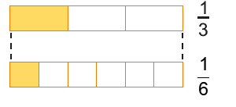1/3 > 1/6
Ao dividirmos dois inteiros em partes iguais, a maior parte será do inteiro que foi dividido em um menor número de partes.
Como no caso da pizza cada um comeu um pedaço, significa que foram to-madas quantidades de partes iguais do inteiro, ou seja, cada um pegou uma parte.
Logo, quem comeu mais foi Caio.
Também podemos comparar as frações. Sabemos que os tamanhos das fatias são diferentes e que os dois amigos comeram uma fatia cada um. Para comparar as frações que representam cada fatia comida e descobrir qual delas representa a maior, temos de comparar os denominadores. O menor denominador indica a maior fatia, pois mostra que o inteiro foi dividido em um número menor de partes.
Quando duas ou mais frações têm o mesmo numerador, a maior delas é a fração com o menor denominador.
174
No terceiro caso, temos a comparação entre frações que apresentam numeradores e denominadores diferentes. A representação destas frações por meio gráfico ajuda a visualizar qual delas é a maior. Porém a forma mais usual de realizar esta comparação é usando o conceito de frações equivalentes. Ao encontrarmos as frações equivalentes às frações dadas, basta que comparemos os numeradores. A fração que apresentar o maior numerador, será a maior fração.
Converse com os alunos e verifique se ficou claro para eles como realizar a comparação entre duas frações nos diversos casos estudados.
Comparação entre frações com numeradores e denominadores diferentes
Júlio e Carlos comeram somente a pizza de rúcula. Júlio comeu 3/4 e Carlos, 1/5 . Quem comeu mais?
Da mesma forma que nas situações anteriores, podemos representar a situação por meio de um desenho, observe:

Ou ainda, para saber qual fração representa a maior quantidade de pizza, precisamos determinar frações equivalentes a cada uma delas, de forma que essas frações tenham o mesmo denominador.
O novo denominador deve ser múltiplo de 4 e 5. Por isso, vamos obter o mmc entre 4 e 5.
mmc (4, 5) = 20
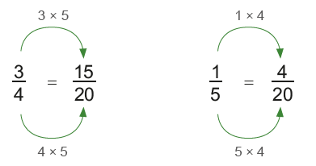Comparando as frações 15/20 e 4/20 , temos que 15/20 representa a maior quantidade de pizza. Portanto, 3/4 é maior que 1/5.
Foi Júlio quem comeu mais pizza.
As frações 3/4 e 1/5 possuem outras frações que são equivalentes e que apresentam um denominador comum. Por uma questão de facilidade do cálculo, calculamos o mínimo múltiplo comum que representa o menor denominador comum.
Quando duas ou mais frações apresentam numerador e denominador diferentes, devemos encontrar frações equivalentes a elas que tenham o mesmo denominador. A maior fração será aquela que tiver o maior numerador.
175
Encontre soluções
Atividade 2
Para saber quem comeu menos chocolate, é necessário, primeiramente, reconhecer qual fração representa o menor pedaço. Para isso, basta observar o denominador, o qual informa em quantos pedaços a barra foi cortada; a que foi mais dividida apresenta pedaços menores. O numerador, por sua vez, informa quantos pedaços do todo foi consumido; no caso apresentado, o numerador de todas as frações é igual a 1, ou seja, em todas as barras foi comido somente um pedaço. Logo, quem comeu menos chocolate foi o segundo amigo, que comeu 1/9 da barra.
Atividade 4
É possível verificar quem percorreu o maior trajeto por meio de frações equivalentes, com denominadores iguais em relação às frações dadas. Observe:
7/3 e 5/3 = 6/10
Portanto, quem percorreu o maior trajeto foi quem percorreu 7/10 do caminho, ou seja, Juca.
Atividade 6
Para escrever as frações em ordem decrescente, é necessário encontrar frações equivalentes às frações dadas com o mesmo denominador. Dessa forma, ao comparar os numeradores, é possível saber a ordem em que devem ser colocadas.
2/3, 5/2, 7/6, 13/18
12/18, 45/18, 21/18, 13/18
A ordem decrescente dessas frações é, portanto:
5/2, 7/6, 13/18, 2/3
ENCONTRE SOLUÇÕES
1. Joana bebeu 6/11 de uma garrafa de suco e Júlia bebeu 5/11 da mesma garrafa. Quem bebeu mais suco?
2. Três amigos gostam muito de chocolate e cada um deles tem uma barra, todas de mesmo tamanho. O primeiro comeu 1/7 de sua barra, o segundo comeu 1/9 e o terceiro 1/3. Qual dos três comeu menos chocolate?
3. Observe os pares de desenhos e escreva, em seu caderno, as frações que correspondem à região colorida. Em seguida, utilizando os sinais >, < ou =, compare- as.
a)
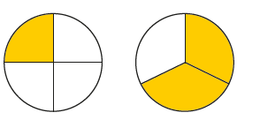b)
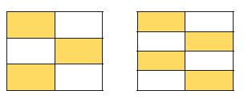c)
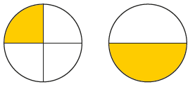d)
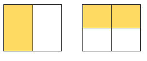e)
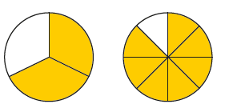176